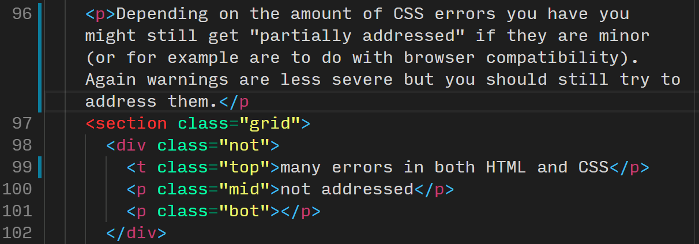
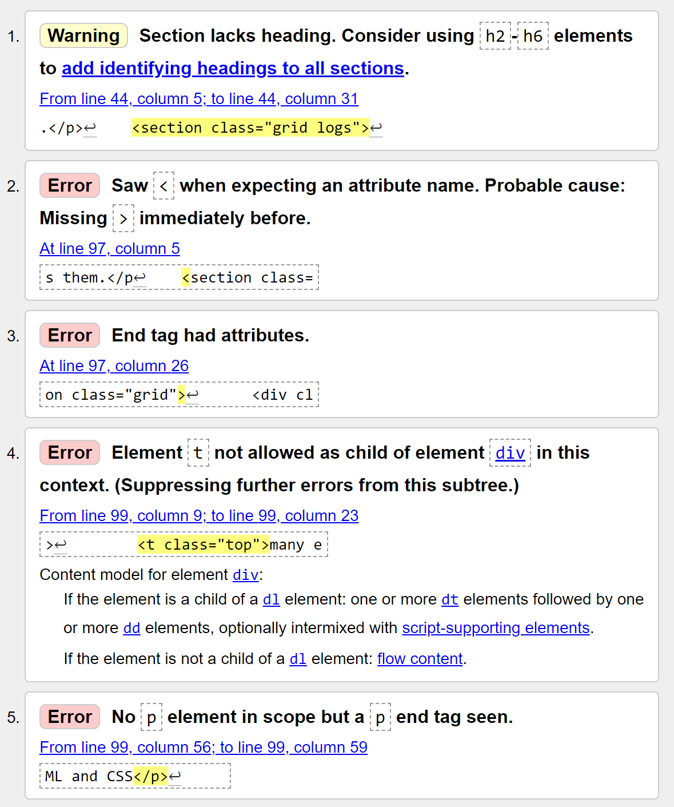
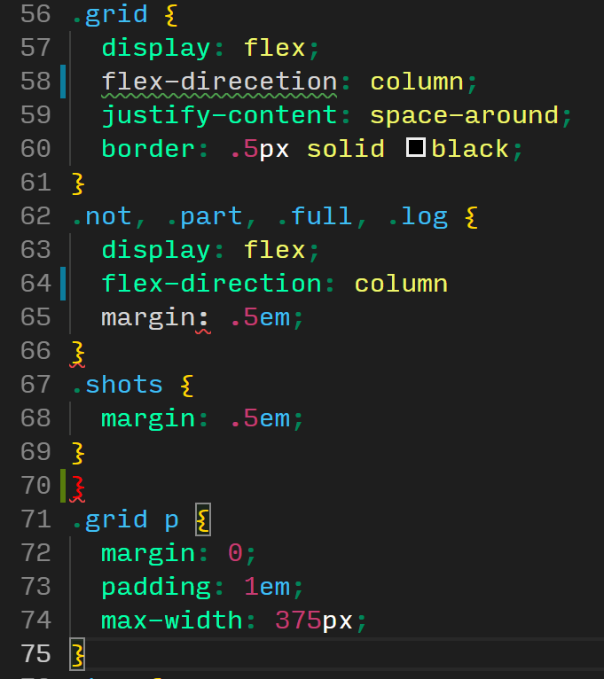
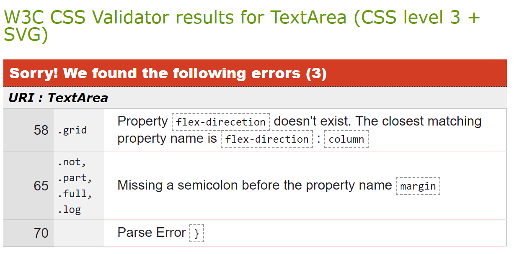
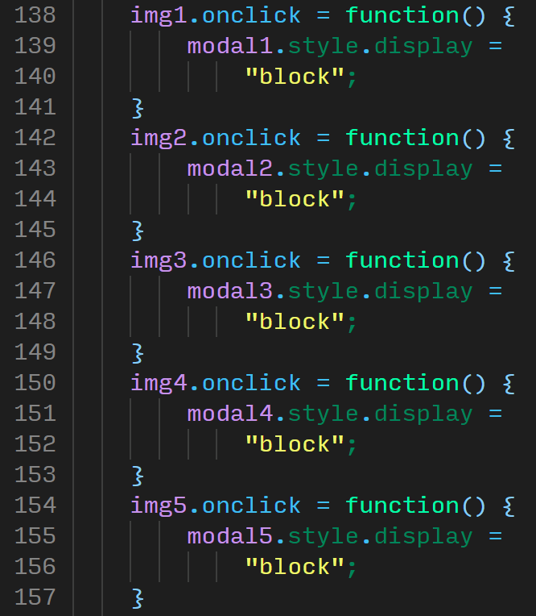
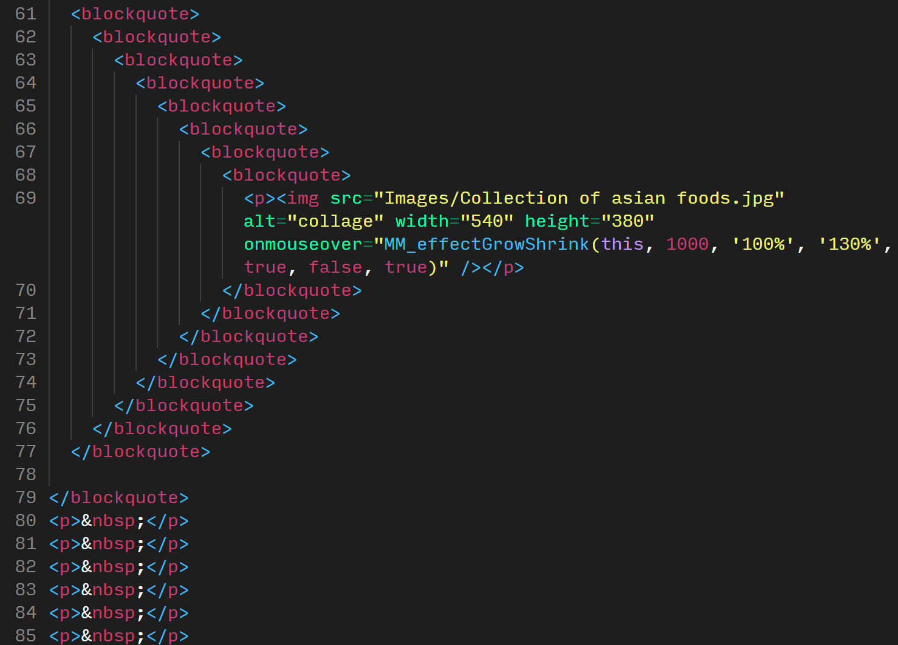
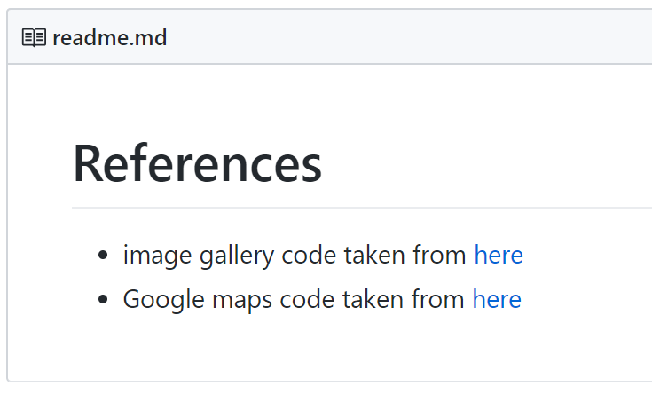
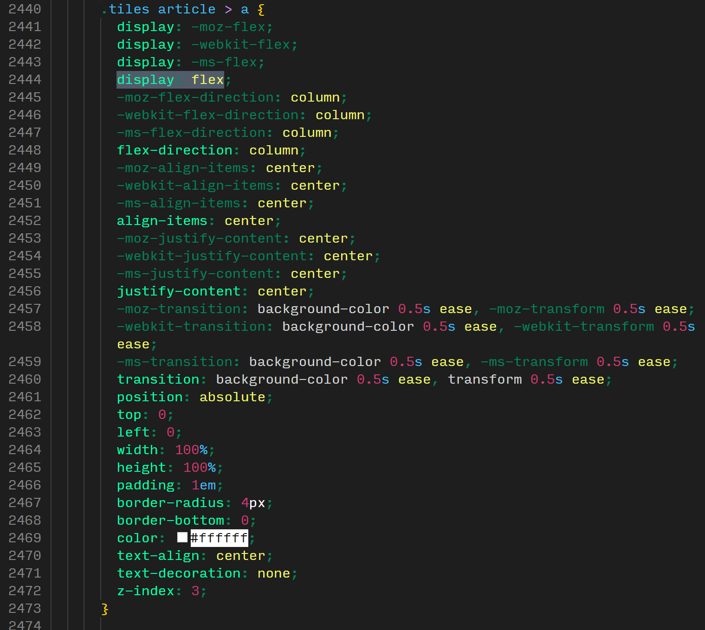

Here are some examples of the kind of work students have produced in previous years. They're in rough categories so you get an idea of how these websites were marked.
Overall stats:
pass-rate was 96%
average grade was 64%
about 40% had firsts
Deadline in X days!
How to read this document:
This document is organised in order of the marking criteria and shows examples of each of the three categories ("not addressed", "partially addressed", and "fully addressed") for each of the points (if suitable).
You can click on any image or gif to open a larger version in a modal, and click anywhere within the modal to hide it again.
Shortcuts:
Screenshots of overall design
Here are some examples of student work from the previous two years, with a rough idea of how they were marked overall.
Please note that this only shows how the pages look, it doesn't show any animations or hover effects, and most of all it does not show the quality of the code. So some of the pages are marked higher or lower overall perhaps than you might expect due to underlying issues with the code. This includes for example API calls that bring in content dynamically from external sources which might not be clear from simply looking at the final design of the website.
Try and fix any errors and address warnings that are raised by the validator. Mostly this will catch serious syntax errors but it also points the way to good practice in general.
For the HTML validation, errors must be avoided completely to get "partially" or "fully addressed". Warnings are less severe but you should still try to address them.
Depending on the amount of CSS errors you have you might still get "partially addressed" if they are minor (or for example are to do with browser compatibility). Again warnings are less severe but you should still try to address them.
Validation is your friend! Use it often!
Often, programmer's text editors will highlight syntax errors as shown below (either by squiggly underline or by a change in colouring (e.g. white text instead of green). This can help you debug your code.

HTML code with 2 errors
note the missing closing > bracket of the p tag on line 96, and the typo on line 99 showing an opening t tag instead of a p tag

HTML code validation results
the validation for the HTML code shown just now highlights several issues, for instance a warning about the section missing a heading which can be ignored, but also error 2 which indicates to the missing bracket on line 96, error 4 points to the erroneous t tag, the other errors here are actually propagation errors

CSS code with 3 errors
note the typo on line 58, the missing semi-colon on line 64, and the extra closing brace on line 70

CSS validation results
the validation results here highlight very precisely were those errors are and even gives an idea of how to fix them
not addressed
several errors in HTML or CSS, many of which could have been easily fixed or avoided and no attempt at fixing is evident
partially addressed
some minor obscure errors (with attempts to fix them clearly shown for example in the console)
fully addressed
we would expect there to be no errors in either the HTML or the CSS for this category
1.2. Consistent code nesting and indentation (2 spaces is industry-standard)
If you are unsure about your indentation practice you can use a beautifier to indent your code for you (yes, we are essentially giving away marks here)! See links below:
not addressednot addressedpartially addressedfully addressed
not addressed
very inconsistent indentation, possibly causing errors with closing brackets and tags, in more than one file
partially addressed
a few minor and sporadic irregularities
fully addressed
very consistent indentation in all files
1.3. Separate .css and .js files (e.g. no "style=" or "onclick" in HTML)
This is largely marked on amount of inline logic in the HTML. So for instance one occurance of "onclick" or a "width" declaration inside an <img> tag would be considered "partially addressed". Several instances of this would be "not addressed" and of course no inline styles or scripts would be "fully addressed".
The examples below are taken out of context of the whole repository so I can't really show the grading element for these fairly. Suffice to say inline styles and scripts like these should not happen ever.
depends on overall number
note missing video tag instead of div, inline styles ("align" marked in red), spaces between attributes and values (e.g. class = "VideoEmbed" instead of class="VideoEmbed"), inline JS (onclick instead of eventListener)
not addressed
note excessive use of onclick, inline styles, the div with class "tab" should simply be a <nav> tag, the section with class "mainbody" should be a <main> tag
depends on overall number
note the setting of background colour inline and also the div with class "Header" should be a <header> tag, and the <b> tag should be a <strong> tag instead
depends on overall number
note line 51 shows a syntax error of a tag without a name just a class, indentation is bad, and contains inline CSS styles for the image
not addressed
there really is no need to include "onclick" triggers in the HTML or inline styles, so don't use them, or clean up any code you copy from tutorials that uses them - translate it into JavaScript or move the styles into your CSS stylesheet
partially addressed
there has to be clear evidence otherwise of separate programming logic in separate files (e.g. handling eventListeners rather than "onlick", separate CSS file for styles)
fully addressed
no instances of inline style manipulation or inline JavaScript (with the exception of scripts for website analytics, e.g. Facebook or Google Analytics widgets)
1.4. Use of CSS3 features e.g. flexbox, animations, CSS grid
This largely depends on the number and quality of examples found in the code. There isn't a specific number of features you have to include, but it should cover at least one of the examples above well. For example you can use advanced flexbox to create multi-column layouts that adapt to screen-size, or you add a few different animations to your site, or you layout the page with grids that adapt to screen size too.
not addressed
only very basic CSS in general and no CSS3 features used at all, or very buggy or pointless (e.g. just slapping a display: flex on a random element with no effect
partially addressed
some attempts at using CSS3 features such as flexbox and animations but maybe slightly buggy or redundant, maybe contains an animation but includes lots of redundant vendor pre-fixes (e.g. "-webkit")
fully addressed
good use of flexbox and or grids for layout, and/or good use of animations (e.g. rotating icons on hover, responsive grid layout, etc)
1.5. Tidy file and folder organisation with lower-case names
This should be fairly self-explanatory. Keep file and folder names lower-case and don't include any spaces or underscores (use hyphens if necessary). We normally expect you to keep your images, CSS, and JS files in a separate folder each. Don't include any unused files you used during development. Clean the repository for your final commit. Your main homepage must be called "index.html". This is necessary for GitHub Pages to work and most web servers too.
not addressednot addressednot addressedpartially addressedpartially addressedfully addressedfully addressedfully addressed
not addressed
this may include cases where all files are in the root directory, including code files and any other assetts such as images, or poorly organised folders overall, and file names may be inconsistent (lower-case, camel-case, upper-case, underscores, spaces, etc.), no index.html file
partially addressed
shows attempts at organising files well but has some issues, e.g. inconsistent naming convention, or some images outside of image folder
fully addressed
files are organised by type into sub-folders, file names are consistent and appropriate (e.g. no spaces, underscores)
2. JavaScript, APIs & JSON
Please note that you should only use native code e.g. no JQuery, Bootstrap, etc. External assets such as images, FontAwesome icons and Google fonts are acceptable.
2.1. No JavaScript errors in the browser console
This largely depends on the number of instances found in the console and the severity of the errors. Errors that break functionality are worse than warnings for example.
It may be a good idea to include console.log() statements for debugging purposes. Remove them if things work out, or if not then leave them in to show your attempt of fixing them. Please also note that you should remove any console.log() statements before your site goes live as it is considered bad practice.
Warnings can often be ignored as they're browser related, e.g. ad-block.
not addressed
this might include errors that could be easily fixed, not linking files properly (e.g. typos, wrong paths or wrong file names) and cases were there are no errors but no JS was used at all
partially addressed
this applies if we can see that you've tried to fix the errors either by using console.log() statements or comments in the code
fully addressed
note that this only applies if a decent amount of "handwritten" JavaScript was used; if all you've done is copy and paste some Google maps script then we can't give you full marks for not having errors
2.2. Use of JavaScript for DOM manipulation and/or interaction
This largely depends on how JS was used. The point of this crtieria is for you to use JS to manipluate some content on the HTML page, for instance feedback of user input from a form (e.g. user enters name, name gets printed into a paragraph on the page). An alert box does not really count as "DOM manipulation" so would get "not addressed".
This also includes "tabbed" layouts that dynamically show or hide content and hamburger mobile menus that are shown or hidden via JS.
Please not that PHP scripts for contact forms are unmarked - we will ignore them completely. It's not going to affect your mark to have a non-functional contact form.
not addressed
Google maps with minimal customisation (e.g. coords) does not count towards this or very basic attempts of including JS such as a single alert() statement
partially addressed
not fully functional perhaps due to some errors or very simple (e.g. basic innerHTML use)
fully addressed
more than one instance of DOM manipulation or more advanced changes such as styling (not just content) (e.g. this document uses conditional colouring of figure captions, see scripts.js)
2.3. ES6 syntax: e.g. "let" and "const" over "var", template literals, arrow functions
not addressed
code full of var and standard string concatenation (e.g. 'hello ' + name + '!' instead of `hello ${name}!`), maybe even some JQuery
partially addressed
inconsistent use, maybe even some JQuery
fully addressed
ES6 features used throughout and consistently, if no JS was used at all or very little you are not automatically getting full marks for one single instance of let, you have to show proficiency
2.4. Use of JavaScript to handle data (e.g. JSON from an external API)
As mentioned briefly above in point 2.2 using a Google map in not technically handling JSON data via an API, so this might only get you "partially addressed" (depends on how much you customise the map for instance).
There are many services out there with APIs related to images, news, weather, videos, Wikipedia, translations, maps, etc.
The use of the Google Fonts API or embedded YouTube videos, or Twitter "widgets" do not count towards this point.
Although Google maps is used in the examples below it is not compulsory.
not addressed
very basic Google map, possible as a inline script and with errors
partially addressed
well customised Google map, some other basic API use
fully addressed
advanced API calls to get JSON data and display it on the page (e.g. populate an image gallery, change background image accroding to current weather, query Wikipedia and display top 3 results and related news articles from the Guardian, etc.
2.5. DRY code e.g. no repeated similar functions without parameters
Code can generally be divided into two categories: DRY and WET code. DRY stands for Don't Repeat Yourself and WET stands for Write Everything Twice. Industry best practice suggests you should use a DRY coding style instead of a WET one, as this is much more efficient and easier to debug and maintain.
WET
you can clearly see the amount of duplication here that could have been prevented by writing a function with parameters

WET
again, this could have easily been turned into a simple function. create two variables that hold the lists of images and modals, then loop through the images one by one and change the style for the corresponding modal
This second example above could be rewritten easily as such:
or even better (because style.display essentially adds an inline style to the HTML rather than a style rule to the CSS stylesheet) replace the "modals[i]" line with:
modals[i].classList.add("block");
and add this rule to the stylesheet:
.block { display: block }
This easily reduces down the roughly 200 lines of code the student had previously (only a tiny proportion is shown in the screenshot above) to 7 or 8.
not addressed
there is lots of repetitive code in both the CSS and JS perhaps, with no attempt to do intelligently loop through arrays of elements for example
partially addressed
mostly DRY code but maybe with a few exceptions, but commented well or shown attempts at solving this more efficiently
fully addressed
fully DRY code, no repetition of code blocks
3. Responsiveness, Accessibility and Interaction
3.1. Responsive at any size with mobile-first CSS breakpoints
The starter code we have provided you with contains two breakpoints (@media rules in the CSS) in a mobile first style. This means that any styles for mobile go above (and outside of) the two media queries, any styles for tablet size devices should go into the first media query and styles for desktop monitors should go into the bottom media query.
Most websites will not need any more breakpoints unless you have a very complex laypout. In fact you may not need the intermediary "tablet" size breakpoint even.
There is no set number of breakpoints but we recommend either 1 or 2. For any specific extra breakpoints please explain in a code comment why they are needed.
not addressed
no attempt at all, or very poor attempt (for example having broken media queries, lots of duplicate breakpoints, broken code inside media queries, etc.)
partially addressed
there may be a mixture of media queries (perhaps in desktop first style), maybe an excessive number of breakpoints, or the changes made are very minimal (e.g. no substantial change in layout)
fully addressed
content is clearly readable on mobile and adapted to fit larger screen sizes by using more complex layout such as two or three column designs, styles are mobile first and appropriate number or breakpoints are used
3.2. Well-ordered information architecture, ease of navigation at all sizes
This largely refers to the site navigation, i.e. the menu. This needs to adjust to different screen sizes, for instance by having a "hamburger" menu on mobile, and has to be well organised.
not addressed
might be very simple or inconsistent menu with no attempt to make it mobile friendly (or vice versa: having a "hamburger" menu on desktop screens is poor design)
partially addressed
this may be a very well designed menu that fails to adapt to different screen sizes, or a fairly basic collapsable menu that is used for all screen sizes
fully addressed
a well organised navigation menu that adapts well to all screen sizes
no attempt or very poor attempt of web accessibility, that is, no or little semantic elements, no alt attributes, and poor structure of heading tags
partially addressed
some effort to include accessibility features but inconsistent
fully addressed
excellent use of semantic tags were applicable, descriptive alt attributes for any images, and clear hierarchical heading structure
3.4. Coherence of overall design - colour, content, styles, etc.
not addressed
messy design, inconsistent spacing and colours
partially addressed
some attempts at creating a consistent theme for content layout and styles
fully addressed
content displayed on pages clearly and consistently according to PARC principles
3.5. CSS layout of HTML5 elements e.g. no tables

not addressed
this is a goldmine: blockquote is used for centering an image, empty paragraphs with just a space ( ) inside are used for spacing, and also: the images folder has a capital "I", the image name has spaces in it, and there's an inline script ("onmouseover")
not addressed
this includes use of tables for layout of content (unless this is actual tabular data), inappropriate use of <br> tags for spacing instead of margins and paddings, use of <blockquote> tags for centering, etc.
partially addressed
layout is generally done via CSS stylesheets but mostly based on the natural flow of HTML elements
fully addressed
layout is handled fully by CSS (flexbox or grids or other ways of positioning elements) in creative and responsive ways (e.g. not just keeping elements in their natural flow)
decent amount of commits although many on the day before the deadline, poor commit messages, note also some experiment with a branch but only to update readme
excellent number of commits spread over time, very good commit messages, note also excellent use of branching for feature development
4.1. Source code and live site on GitHub Pages
This should be "fully addressed" for all of you if you've managed to set up your GitHub Classroom repo properly and enables GitHub Pages in the settings. This is really only for some cases were students simply haven't followed these instructions at all and end up submitting a zip file via email (yes, we've seen it all).
not addressed
this only really applies to students who for some reason do not submit a GitHub repo and have no live site
partially addressed
the repo is ok and we can see the history of commits but the live "GitHub Pages" site does not work (perhaps because it has not been enabled) or because of errors in file paths or file names
fully addressed
properly set up repo and live site with no path or file name errors
4.2. Use of GIT branches for feature development
Branches are slightly more advanced feature of git. They should normally be used for feature development (e.g. a new JavaScript feature, or a re-design half way through).
no evidence of a branch or attempt to use a branch
partially addressed
a branch exists but was not merged correctly or was used in a very basic way
fully addressed
clear evidence of merged branches in git log
4.3. Regular commits, not all last few days
There isn't a set amount of commits you have to create in order to get "partially" or "fully addressed" here. It is possible to get full marks for this component if you have ten excellent commits, with very good commit messages spread out over a decent period to show progress.
We might "checkout" individual commits to verify progress if there are concerns about the integrity of the code (i.e. suspected plagiarism).
Here's an excellent resource on this topic in general:
very few commits, most of the in the few days before the deadline, with no clear progress of code progression seen
partially addressed
might be few commits but nicely spread out, or many commits but all bunched together before deadline
fully addressed
should be a decent amount of commits well spread over time with a clear progression of code evident
4.4. Brief, informative commit messages
Look at the examples above to get an idea of what would be considered bad, good, and excellent commit messages.
Normally, you should use imperative mood to write your messages, for example "add readme file" instead of "added readme file". Read this excellent resource on this if you'd like to know more:
The content of your readme is very individual and depends on your site, the issues you've faced, etc. But at the very least you should include references here to any external sources you've used (e.g. images, text content, embeded videos, API code, code examples from CodePen, W3Schools or other sources, etc.) Note that this does not have to be in Harvard referencing format but could simply be a url with a short description of what it was used for, for example:
# References
- image gallery code adapted from [here](https://link.url)
- Google maps code adapted from [here](https://link.url)
The beauty of GitHub is that if your readme file is named and formatted correctly (and at the root of your repo, i.e. not in a sub-directory) then GitHub will automatically display it nicely on your repo website as shown below.

not addressed
this may include cases where there is no readme, or where the readme contains only a heading and very little information, perhaps in wrong format, wrong name, etc.
partially addressed
readme may be in incorrect Markdown (so does not display properly), does not contain references, contains very sloppy, poor language, etc.
fully addressed
well structured readme in Markdown format covering key details about the site (for example: acknowledgement of bugs, references to source code, images, or text content)
General Issues
redundant class
really no need to add a class to the table data tags, just style them directly
lots of redundant code
note the strange indentation (probably tabs rather than spaces used), the amount of redundant code (e.g. the menu div is completely unnecessary) often the HTML tag can be styled directly without a class or id. no real need to make the menu a <ul> either.
messy
note inconsistent indentation, the inline styles at the top, inline script in the middle (although fairly well commented), and the <br> tags at the bottom for layout (you should use CSS to pad things out)
messy
note the "max-width" and "width" inline styles at the top, and inline script below (although fairly well commented)

out-of-date
note the vendor prefixes (-webkit, -moz, -ms) which are not needed since flexbox and transitions are supported in all browsers